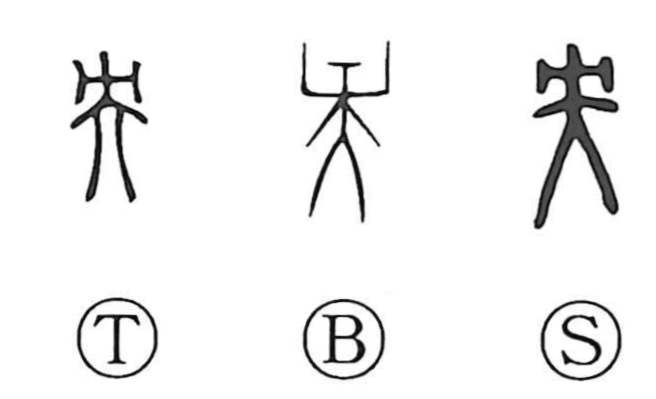

央

Kun: | On: ou
center ・ middle ・ central
Explanation
央 depicts a person seen from the front with a wooden yoke fastened at the neck, an implement of punishment. This graph also underlies 殃, where the addition of 歹—the form of bone remains—evokes a calamity associated with such punitive death. Because the restraint is fixed at the neck, close to the body’s core, the character came to mean the center or middle.